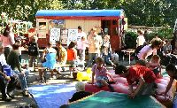
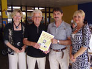
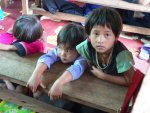

|
Statt Geschenke zur goldenen Hochzeit 1.150 € für terre des hommes |
Gertrud und Wolfgang Dieterle verzichteten anlässlich ihrer Goldenen Hochzeit auf Geschenke und ließen stattdessen Geldbeträge in eine von Wolfgang Dieterle selbst gestaltete Spendendose werfen. „Eigentlich haben wir alles, was man so zum Leben braucht. Und es ist unser Ziel, die gute Arbeit von terre des hommes zu unterstützen“, so das Hochzeitspaar einstimmig. Seit mittlerweile nahezu 30 Jahren fördert der ehemalige Gernsbacher Ratschreiber zusammen mit seiner Ehefrau terre des hommes durch regelmäßige Spenden.
Durch vielfältige Aktionen wie Konzerte, Kinderfeste und Basare und durch Einzahlungen mehrerer hundert Spender und Sponsoren war es der rührigen Arbeitgruppe terre des hommes Murgtal/Mittelbaden möglich, in den vergangenen 30 Jahren annähernd zwei Millionen Euro zusammenzutragen.
Heinz Wolf, Vorsitzender der Arbeitsgruppe zeigte sich sehr erfreut über die großherzige und nachahmenswerte Spende: "Pro Jahr können wir mehr als 1.000 Jungen und Mädchen eine Zukunft geben, indem sie eine Schul- und Berufausbildung erhalten, medizinisch und psychologisch betreut werden, Nahrung, sauberes Wasser und ein Zuhause bekommen".
Mit dem Betrag aus Gernsbach wird die Schule CEPRONAM in der peruanischen Stadt Jaén unterstützt, wo terre des hommes rund 300 in Ziegeleien arbeitenden Kindern eine schulische Ausbildung und damit eine Zukunftsperspektive bietet. Eine Schulspeisung mit eiweißhaltigen Produkten aus dem Schulgarten gibt den Kindern die Kraft neben der harten Arbeit auch noch das schulische Programm durchzuhalten. Das seit Jahren erfolgreiche Projekt wird neuerdings von etlichen anderen öffentlichen Schulen der Region kopiert und hat somit Modellcharakter für Peru und andere Länder Südamerikas.
|
Nicolette Kressel als Vorleserin auf dem Kinderfest |
Den Worten der SPD-Bundestagsabgeordneten Nicolette Kressel lauschten am frühen Sonntagnachmittag des 16. September im Foyer der Kuppenheimer Werner-Siemens-Realschule rund 20 Kinder gespannt. Mit Politik hatten ihre Worte dabei auch wenig zu tun: Stattdessen las sie ihren kleinen Zuhörern die Geschichte des schwarzen Schafes "Rosenmolchen" vor. Die Aktion fand im Rahmen der "Woche des bürgerlichen Engagements" des Sozialverband Deutschlands (SoVD) statt.
Unter dem Motto der Initiative "Gut tun, tut gut" lud der SoVD Bundestagsabgeordnete deutschlandweit zum Mitmachen an der Aktion "10.000 gute Taten für Deutschland" ein. Ziel der Aktion soll sein, durch eine gute Tat auf ehrenamtliches Engagement aufmerksam zu machen.
Was für eine gute Tat sie dabei vollbringen, können die Abgeordneten selbst bestimmen. Kressel, die - wie sie erzählte - passionierte Sammlerin von allem, was mit Schafen zu tun hat, ist, las dabei auf den Kindersommerfest von terre des hommes Murgtal/Mittelbaden aus einem ihrer Lieblingsbücher vor.
"Dass die Aktion ausgerechnet beim Kindersommerfest stattfindet, ist eher zufällig" erzählte Kressel. Denn schon bevor sie von SoVD aufgefordert wurde, an der Aktion teilzunehmen, hatte sie sich entschieden auf das Sommerfest zu kommen. "Als dann die Anfrage von SoVD kam, dachte ich, dass sich das ja gut verbinden ließe, um so auf die Arbeit von terre des hommes aufmerksam zu machen", erklärte Kressel weiter.
BNN 18.09.2007 |
7500 Euro für eine neue Perspektive
Viele Besucher und Spenden beim Kinderfest auf dem Gelände der Kuppenheimer Realschule |
Seit einem Vierteljahrhundert wissen die Kinder der Region, dass es nach den Sommerferien noch einmal so richtig kunterbunt wird. Denn dann lädt die terre des hommes Arbeitsgruppe Murgtal/Mittelbaden zu ihrem „Kinderfest" ein. Am 16. September vergnügten sich über 2500 kleine und große Besucher auf dem Gelände der Kuppenheimer Realschule.
Autos und Fahrräder standen entlang der Wörtelstraße, rund um das Cuppamare und die Sporthalle, schon von weitem erklangen Trommeltöne, und Kinder mit bemalten Gesichtern sprangen herum. Anziehungspunkt war das „25. tdh-Kinderfest", das die über 80 Helferinnen und Helfer der Arbeitsgruppe Murgtal/ Mittelbaden seit Wochen vorbereitet hatten. Bürgermeister Karsten Mußler brachte es in seinen Begrüßungsworten auf den Punkt: „Hier haben sehr viele Familien ihren Spaß und können gleichzeitig anderen Kindern helfen, denen es nicht so gut geht."
Pressebericht |
Kinder, Kultur und der gute Zweck:
"Wir bauen die größte Sandburg des Schwarzwaldes" |
|
 |
| Anne und Heinz Wolf (terre des hommes) nehmen ein Spendcouvert mit 1.038Ä von Achim und Marion Rietz (von links nach rechts) in Empfang. |
Das 8. Gausbacher Kinder-Kulturprojekt Anfang September stand unter dem Moto: „Wir bauen die größte Sandburg des Schwarzwaldes“. Weit mehr als 1.000 Großeltern, Eltern, Kinder und Gäste aus dem gesamten Murgtal beteiligten sich an dem Riesenspaß auf dem Sportplatz Gausbach. Zwar stand das Sandeln im Vordergrund, aber auch das von Clara, Ulrike und Leo Sztatecsny (terre des hommes) organisierte Afrika-Labyrinth und die Leintücherbemalung fanden neben Greifvogelschau, Ponyreiten, Bogenschießen u.a. große Resonanz. Die von Ortsvorsteher Achim Rietz initiierte und durchgeführte Aktion fand in der gesamten Region so großes Interesse, dass selbst der SWR in seiner Landesschau darüber berichtete.
Mit soviel Bestätigung und einem dicken Couvert reisten daraufhin Marion und Achim Rietz zum Kinderfest der Arbeitsgruppe terre des hommes nach Kuppenheim, um deren Vorsitzenden Heinz Wolf den stolzen Betrag von 1.038 € für das Schulprojekt „Dafinso“ in Burkina Faso zu überreichen. „Vielleicht ist das der Beginn einer fruchtbaren Partnerschaft zwischen dem vorderen und dem hinteren Murgtal“, so Achim Rietz mit viel Zukunftsoptimismus. Terre des hommes konnte den Betrag um weitere 140 € erhöhen. Heinz Wolf war sehr angetan von der herzlichen Atmosphäre auf dem Gausbacher Sportplatz und fand Parallelen zum Publikumsmagnet „Kinderfest in Kuppenheim“ und dem sympathischen Gausbacher Kinder-Kulturprojekt.
|
"Dem Protest eine Stimme geben - Demokratie für Burma"
terre des hommes ruft zur Unterstützung der friedlichen Protestbewegung auf |
Das entwicklungspolitische Kinderhilfswerk terre des hommes ruft zur aktiven Unterstützung der Demokratiebewegung in Burma auf. terre des hommes fördert in Burma humanitäre Projekte für Flüchtlinge und gegen die Zwangsrekrutierung von Kindern. "Wir sind bestürzt über die Eskalation der Gewalt durch die Militärregierung. Die Informationen, die wir aus Burma von unseren Partnern bekommen, sind alarmierend. Das Regime will jede Berichterstattung über Menschenrechtsverletzungen verhindern", sagte Michael Heuer, Pressereferent von terre des hommes. Projektpartner hätten mit finanzieller Unterstützung von terre des hommes deshalb mobile Einsatzteams gebildet, um die Menschenrechtsverletzungen in Bild und Ton zu dokumentieren. Unter dem Motto "Der Demokratie eine Stimme geben" veröffentlicht terre des hommes auf seiner Homepage unter www.tdh.de ab sofort aktuelle Berichte über die Situation in Burma.
"Wir bitten außerdem um Spenden für diese Aktion unseres Partners in Burma und für unsere Projekte, die wir dort auch weiterhin fördern", so Michael Heuer. terre des hommes unterstützt in Auffanglagern im burmesisch-thailändischen Grenzgebiet Projekte zur medizinischen und humanitären Versorgung von Flüchtlingen. Gefördert wird auch ein Programm gegen die Zwangsrekrutierung von Kindern. Seit vielen Jahren herrscht Bürgerkrieg in Burma. Sowohl das Militär wie auch die verschiedenen Guerillagruppen rekrutieren Kinder für den Militäreinsatz. Nach Expertenschätzungen gehört Burma zu den Ländern mit der höchsten Zahl an zwangsrekrutierten Kindern. Allein in der burmesischen Armee sollen demnach 70.000 Kinder als Soldaten im Einsatz sein.
terre des hommes ist Mitglied im Bündnis "Entwicklung hilft", einem Zusammenschluss deutscher Hilfswerke für aktuelle Nothilfe und langfristige Entwicklungszusammenarbeit.
Stichwort: Burma
- Konto 120 790 Sparkasse Gaggenau-Kuppenheim BLZ 665 512 90
- Konto 102 748 00 Voba Baden-Baden/Rastatt BLZ 662 900 00
- Konto 700 800 700 Volksbank Osnabrück eG BLZ 265 900 25
|
|
|
|
 Ansprechpartner Ansprechpartner
|
|
Wolfgang Deppisch
(Projektinfos)
Tel. 07222 / 32927
Heinz Wolf
(Sponsoring, Allgemeines)
Tel. 07225 / 75543
weitere Ansprechpartner
|
|
Erlöse
1992-2012
|
|

Jahr |
Euro |
1992 |
70.000 |
1993 |
75.600 |
1994 |
83.883 |
1995 |
69.617 |
1996 |
51.412 |
1997 |
61.749 |
1998 |
60.333 |
1999 |
68.742 |
2000 |
85.492 |
2001 |
106.375 |
2002 |
78.937 |
2003 |
84.027 |
2004 |
76.662 |
2005 |
149.941 |
2006 |
84.497 |
2007 |
105.958 |
2008 |
104.053 |
2009 |
100.833 |
2010 |
107.254 |
2011 |
103.600 |
| 2012 |
158.250 |
| 2013 |
163.420 |
1977-2013 |
mehr als 2,7 Mio. € |
|
Detailansicht der Erlöszahlen |
|
|


;)
;)
;)
;)